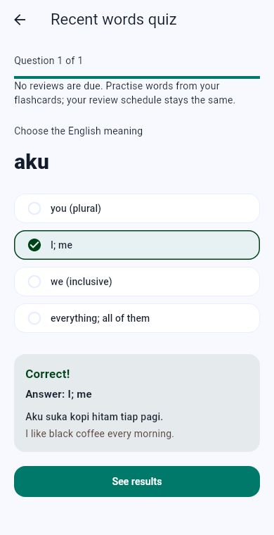

01 / PRACTICEGive new words
Give new words
a little more time.
Flashcards & spaced repetition
See meanings and examples, choose what you know, and revisit words on a review schedule.
Vocabulary quizzes
Check your recall with due words. When nothing is due, practise with words you’ve just seen.
